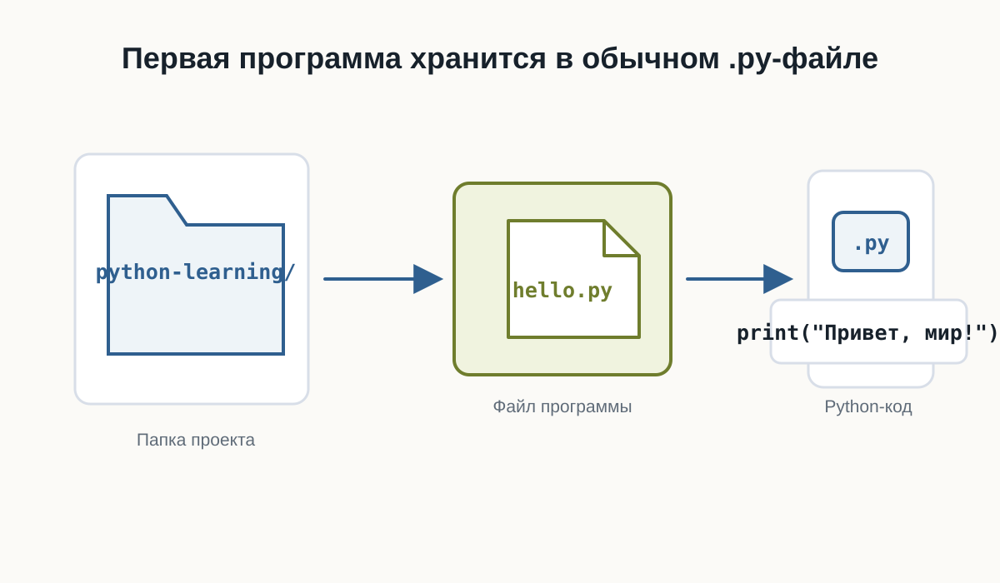
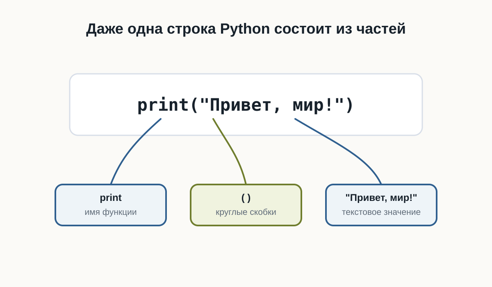
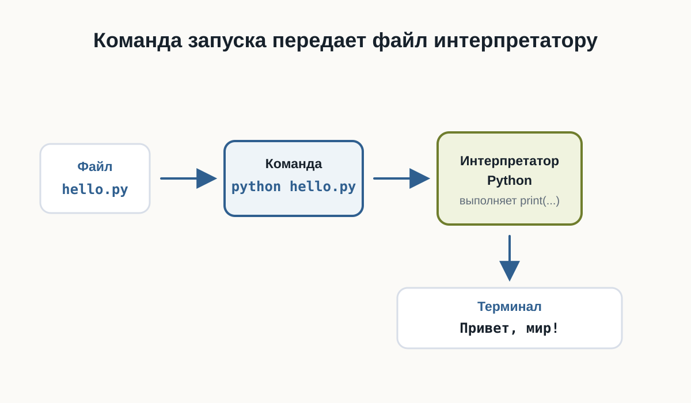
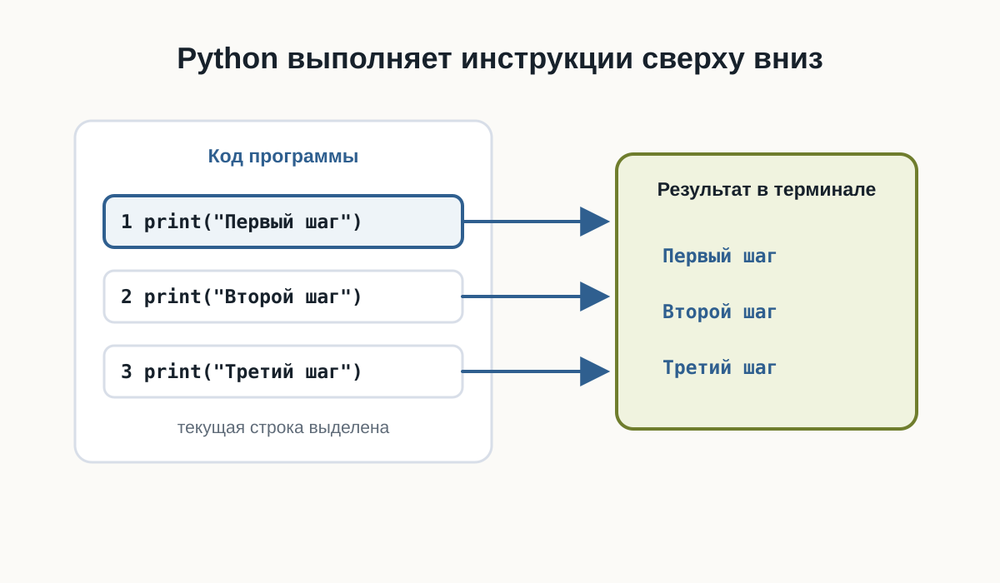
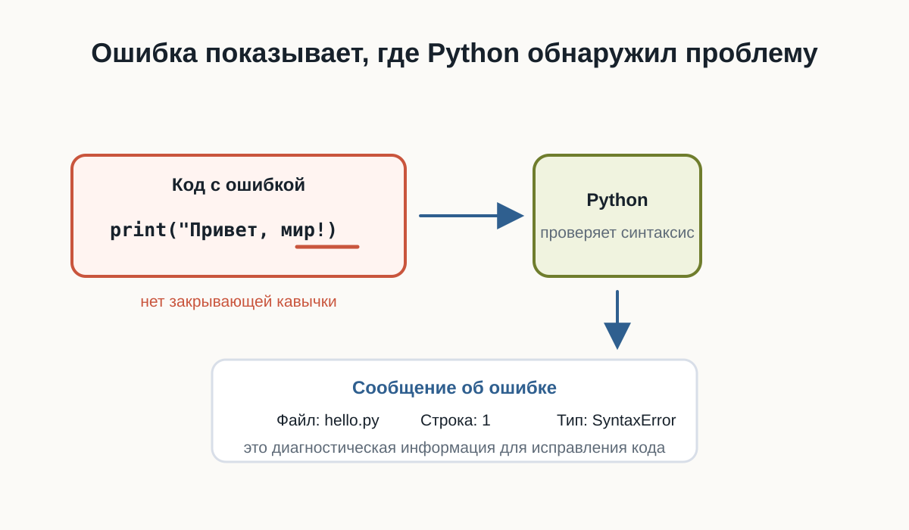
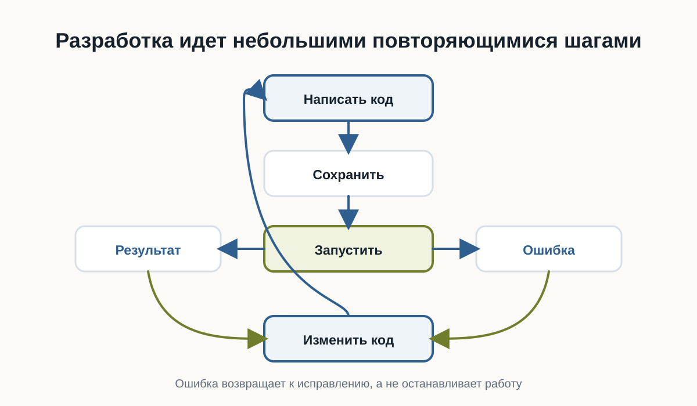

2.7 Первая программа на Python
Главный вопрос главы:
Как написать, запустить и понять свою первую программу на Python?
Мы уже подготовили рабочее пространство.
Теперь можно перейти от объяснений к настоящему коду.
В этой главе мы создадим простой Python-файл, запустим его из терминала и разберём, что именно происходит на каждом этапе.
Наша первая программа будет очень маленькой.
Но путь её выполнения почти такой же, как у гораздо более сложных Python-приложений.
Создаём файл программы
Создайте рабочую папку для первых экспериментов.
Например:
python-learning/Внутри неё создайте файл:
hello.pyРасширение .py означает, что файл содержит исходный код на Python.
В результате структура папки будет выглядеть так:
python-learning/
└── hello.py
Теперь откройте hello.py в редакторе кода.
Пишем первую строку Python
Добавьте в файл:
Измените текст внутри кавычек, добавьте второй print() и запустите пример снова.
Сохраните изменения.
Это уже полноценная программа на Python.
Она содержит одну инструкцию.
Её задача — вывести текст на экран.
Что делает print
В выражении
print("Привет, мир!")можно выделить несколько частей.
print — это имя функции.
Круглые скобки:
()используются для передачи функции данных.
А текст:
"Привет, мир!"находится внутри кавычек.
Так Python понимает, что перед ним текстовое значение.
Пока не нужно подробно изучать функции и строки.
Мы разберём их позже.
Сейчас достаточно понимать:
print(...)просит Python вывести переданное значение.

Запускаем программу
Откройте терминал в папке проекта.
Убедитесь, что терминал находится в каталоге, где лежит файл:
hello.pyТеперь выполните:
python hello.pyВ некоторых системах команда может называться:
python3 hello.pyЕсли всё работает правильно, терминал выведет:
Привет, мир!Первая программа выполнена.
Что произошло после команды запуска
Команда
python hello.pyсодержит две важные части.
Первая:
pythonуказывает, какую программу нужно запустить.
Это интерпретатор Python.
Вторая:
hello.pyуказывает, какой файл нужно передать интерпретатору.
Поэтому команду можно мысленно прочитать так:
Запусти Python и попроси его выполнить hello.pyПосле этого происходит примерно следующая последовательность:

Код и результат — не одно и то же
Это важное различие.
Файл:
print("Привет, мир!")содержит код программы.
А строка:
Привет, мир!является результатом выполнения программы.
Код описывает, что компьютер должен сделать.
Результат появляется после выполнения кода.
Позже одна программа сможет:
- принимать данные;
- выполнять вычисления;
- работать с файлами;
- обращаться к сети;
- принимать решения;
- возвращать разные результаты.
Но принцип останется тем же.
Добавим ещё одну инструкцию
Изменим программу:
print("Привет, мир!")
print("Я изучаю Python")Теперь снова запустим:
python hello.pyРезультат:
Привет, мир!
Я изучаю PythonPython выполнил инструкции сверху вниз.
Сначала первую:
print("Привет, мир!")затем вторую:
print("Я изучаю Python")Это один из фундаментальных принципов выполнения программ.
По умолчанию инструкции выполняются последовательно.
Порядок инструкций имеет значение
Рассмотрим программу:
Результат будет:
Первый шаг
Второй шаг
Третий шагЕсли изменить порядок строк:
print("Третий шаг")
print("Первый шаг")
print("Второй шаг")изменится и результат:
Третий шаг
Первый шаг
Второй шагКомпьютер не пытается догадаться, какой порядок имел в виду программист.
Он выполняет инструкции в том порядке, который указан в программе.

Поменяйте строки местами, запустите пример снова и сравните порядок вывода.
Программа должна быть записана точно
Попробуйте убрать одну кавычку:
Запустите пример с ошибкой, затем исправьте кавычку и запустите ещё раз.
Python не сможет выполнить такую программу.
Он сообщит об ошибке.
Это происходит потому, что исходный код должен соответствовать правилам языка.
Эти правила называются синтаксисом.
Как и в естественном языке, форма записи имеет значение.
Но компьютер гораздо строже человека.
Он не пытается догадаться, что вы хотели написать.

Ошибка — часть программирования
Сообщение об ошибке не означает, что произошло что-то необычное.
Ошибки постоянно возникают во время разработки.
Например:
print("Привет"Python может сообщить о синтаксической ошибке.
Это полезная информация.
Интерпретатор показывает, что программу невозможно разобрать согласно правилам языка.
Работа разработчика часто выглядит так:

Этот цикл будет повторяться на протяжении всей книги.
И в профессиональной разработке происходит то же самое.
Читайте сообщения об ошибках
Начинающие разработчики иногда видят красный текст в терминале и сразу считают его проблемой.
На самом деле сообщение об ошибке — это подсказка.
Например, оно может показать:
- тип ошибки;
- файл, в котором она возникла;
- номер строки;
- дополнительное описание.
Позже мы научимся читать такие сообщения подробно.
Пока важно привыкнуть к простой мысли:
Ошибка — это информация о том, почему программа не смогла выполнить ожидаемое действие.
Первый маленький эксперимент
Измените текст внутри программы самостоятельно.
Например:
print("Меня зовут Алекс")
print("Сегодня я написал первую программу")
print("Следующая цель — понять переменные")Запустите файл ещё раз.
Затем:
- поменяйте порядок строк;
- добавьте ещё один
print; - удалите одну строку;
- измените текст;
- специально допустите ошибку в кавычках;
- прочитайте сообщение Python;
- исправьте ошибку и снова запустите программу.
Это простое упражнение важнее, чем может показаться.
Вы уже проходите основной цикл разработки:
написать → запустить → посмотреть → изменить → запустить сноваПрактика: программа-визитка
Создайте новый файл:
about_me.pyНапишите программу, которая выводит несколько строк о вас.
Например:
Запустите:
python about_me.pyПроверьте результат.
Затем измените программу так, чтобы она содержала не менее пяти строк вывода.
Не копируйте пример полностью.
Введите собственные значения и несколько раз измените программу.
Сейчас важнее привыкнуть самостоятельно редактировать, сохранять и запускать .py-файлы.
Не бойтесь экспериментировать
Одно из преимуществ программирования — большинство экспериментов легко отменить.
Можно:
- изменить строку;
- запустить программу;
- посмотреть результат;
- вернуть код обратно;
- попробовать другой вариант.
Именно через такие небольшие эксперименты появляется понимание поведения языка.
Не ограничивайтесь только примерами из книги.
Если возникает вопрос:
А что произойдёт, если я напишу вот так?
попробуйте.
Что мы уже умеем
После этой главы вы уже способны пройти полный путь небольшой программы:
Идея
↓
Файл .py
↓
Python-код
↓
Запуск через интерпретатор
↓
Результат в терминалеВы также знаете, что:
- Python-программа хранится в
.py-файле; print()позволяет вывести значение;- интерпретатор выполняет программу;
- инструкции обычно выполняются сверху вниз;
- синтаксис должен быть записан точно;
- ошибки являются нормальной частью разработки;
- программу удобно создавать небольшими итерациями.
Что важно запомнить
Первая программа:
print("Привет, мир!")очень маленькая.
Но в ней уже присутствуют основные элементы процесса разработки:
- исходный код;
- файл программы;
- интерпретатор;
- запуск;
- выполнение инструкции;
- результат;
- возможные ошибки;
- исправление и повторный запуск.
Именно из таких простых действий постепенно строятся большие программы.
Что дальше?
Мы научились запускать код.
Но пока наши программы умеют только выводить заранее записанный текст.
Следующий важный вопрос:
Как программе запоминать значения и работать с ними?
Для этого нам понадобится одна из основных идей программирования:
переменные.